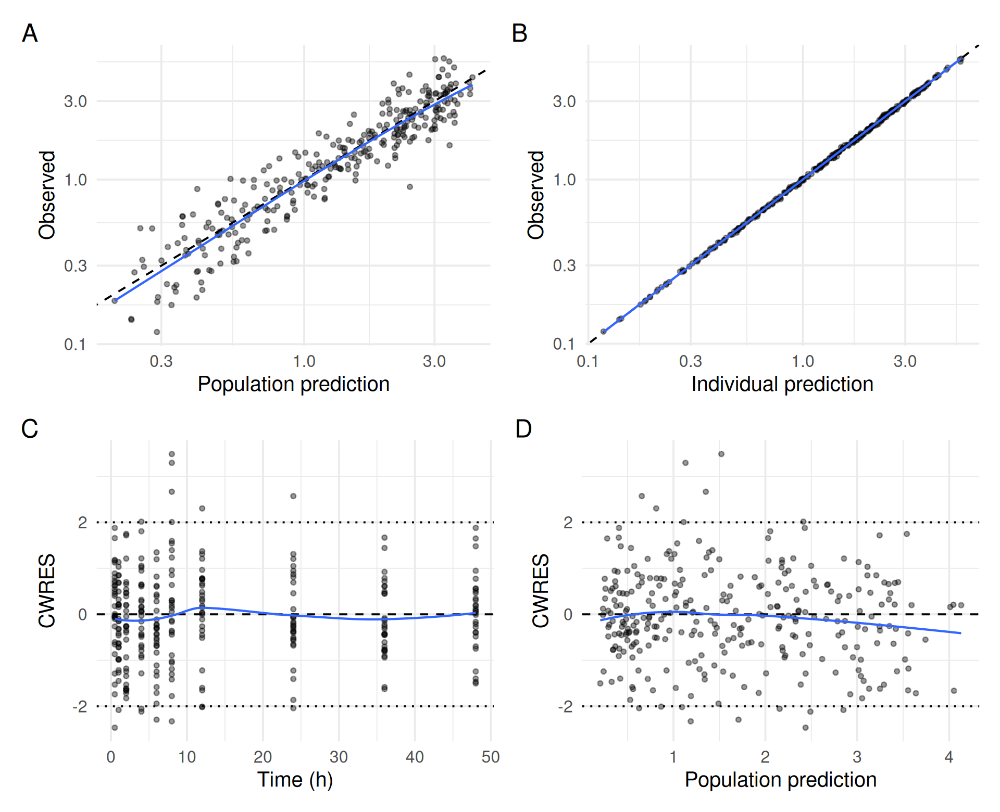
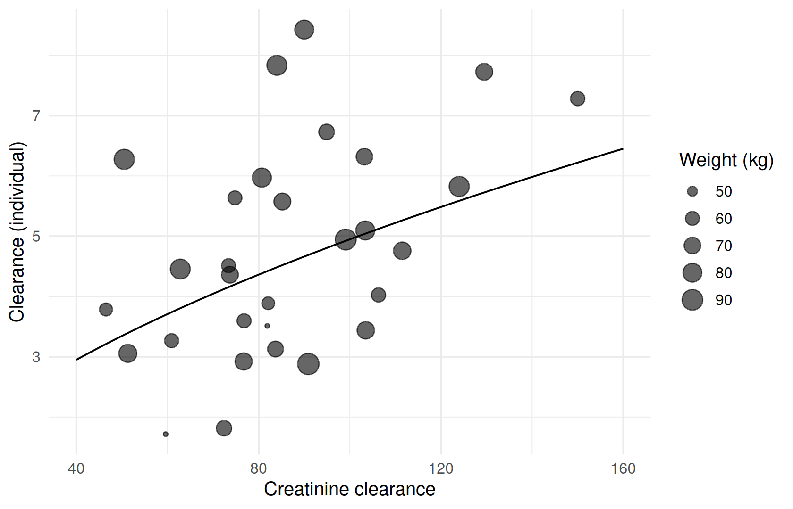

DATA → MODEL → ESTIMATE ⇄ EVALUATE → SIMULATE → REPORT
Tables and figures
Where you are
The analysis is done: the final covariate model is fitted, evaluated and its uncertainty known. A report needs a parameter table, a record of the models compared, exposure metrics for the subjects, and a small set of figures. ferx returns all results as ordinary R data frames and lists, so reporting is plain R (dplyr, gt, ggplot2). The one ferx-specific tool is the model file’s [derived] and [output] blocks, which let the engine compute per-subject exposure metrics.
The data
cov <- ferx_example("two_cpt_oral_cov")
base <- ferx_example("two_cpt_oral_base")
fit <- ferx_fit(cov$model, cov$data, verbose = FALSE)
fit_base <- ferx_fit(base$model, base$data, verbose = FALSE)Minimal runnable call: the parameter table
fit$estimates holds everything a parameter table needs. Between-subject variances are reported as coefficients of variation. For the log-normal random effects of this model, CV% = 100 × sqrt(exp(ω²) − 1), the value print() on the fit shows. Shrinkage comes from fit$shrinkage_eta:
est <- fit$estimates
omega_rows <- est$transform == "variance"
shrinkage <- setNames(100 * fit$shrinkage_eta, fit$eta_names)
param_table <- est |>
mutate(
type = case_when(omega_rows ~ "Between-subject variability (CV%)",
transform == "identity" ~ "Fixed effects",
TRUE ~ "Residual error"),
value = ifelse(omega_rows, 100 * sqrt(exp(estimate) - 1), estimate),
ci = ifelse(omega_rows, NA,
sprintf("%s – %s", signif(lower_95, 3), signif(upper_95, 3))),
shrinkage = ifelse(omega_rows, shrinkage[param], NA)
) |>
select(type, param, value, rse_pct, ci, shrinkage)
param_table |>
gt::gt(groupname_col = "type", rowname_col = "param") |>
gt::fmt_number(columns = value, n_sigfig = 3) |>
gt::fmt_number(columns = c(rse_pct, shrinkage), decimals = 1) |>
gt::sub_missing(missing_text = "") |>
gt::cols_label(value = "Estimate", rse_pct = "RSE (%)", ci = "95% CI", shrinkage = "Shrinkage (%)")| Estimate | RSE (%) | 95% CI | Shrinkage (%) | |
|---|---|---|---|---|
| Fixed effects | ||||
| TVCL | 4.95 | 7.3 | 4.24 – 5.65 | |
| TVV1 | 48.6 | 6.1 | 42.8 – 54.4 | |
| TVQ | 9.58 | 4.3 | 8.78 – 10.4 | |
| TVV2 | 94.2 | 3.6 | 87.5 – 101 | |
| TVKA | 1.26 | 7.8 | 1.06 – 1.45 | |
| THETA_WT | 0.653 | 36.1 | 0.191 – 1.12 | |
| THETA_CRCL | 0.565 | 39.2 | 0.13 – 0.999 | |
| Between-subject variability (CV%) | ||||
| ETA_CL | 33.7 | 26.1 | 0.3 | |
| ETA_V1 | 33.5 | 27.0 | 2.7 | |
| ETA_Q | 22.9 | 27.3 | 2.2 | |
| ETA_V2 | 19.7 | 27.2 | 2.0 | |
| ETA_KA | 43.8 | 27.7 | 3.6 | |
| Residual error | ||||
| PROP_ERR | 0.0196 | 5.7 | 0.0174 – 0.0218 | |
Check the CV% column against the printout of the fit, which reports the same values:
round(param_table$value[omega_rows], 1)
#> [1] 33.7 33.5 22.9 19.7 43.8
grep("CV%", capture.output(print(fit)), value = TRUE)[1:2]
#> [1] " ETA_CL [log-normal] = 0.107531 CV% = 33.7 SE = 0.028096"
#> [2] " ETA_V1 [log-normal] = 0.106347 CV% = 33.5 SE = 0.028678"Reading the result: a model comparison table
A report also records the models that led to the final one. The fit objects carry all the numbers:
run_row <- function(f, description) {
data.frame(model = f$model_name, description = description, method = f$method,
converged = f$converged, parameters = f$n_parameters, ofv = f$ofv,
aic = f$aic, bic_mixed = ferx_bic(f, "mixed"))
}
runs <- rbind(run_row(fit_base, "two-compartment, no covariates"),
run_row(fit, "WT on CL and V1, CRCL on CL"))
runs$d_ofv <- runs$ofv - runs$ofv[1]
gt::gt(runs) |> gt::fmt_number(columns = c(ofv, aic, bic_mixed, d_ofv), decimals = 1)| model | description | method | converged | parameters | ofv | aic | bic_mixed | d_ofv |
|---|---|---|---|---|---|---|---|---|
| two_cpt_oral_base | two-compartment, no covariates | FOCEI | TRUE | 11 | −1,185.4 | −1,163.4 | −1,145.7 | 0.0 |
| two_cpt_oral_cov | WT on CL and V1, CRCL on CL | FOCEI | TRUE | 13 | −1,199.3 | −1,173.3 | −1,152.8 | −13.9 |
Exposure metrics with [derived] and [output]
WarningMaturity: beta
ferx-core labels [derived] and [output] beta. See feature maturity.
A [derived] block defines extra columns that the engine computes from each subject’s fitted profile and writes to fit$sdtab. [output] adds individual parameters or covariates to sdtab. The bundled two_cpt_oral_derived example shows the kinds of expression: per-row values (rate constants), per-subject aggregates (max, tmax) and integrals, including a periodic AUC per dosing window:
drv <- ferx_example("two_cpt_oral_derived")
invisible(ferx_model_get_section(drv$model, "derived"))
#> # [derived]
#> K10 = CL / V1
#> K12 = Q / V1
#> K21 = Q / V2
#>
#> CMAX = max(IPRED)
#> TMAX = tmax(IPRED)
#> AUC_0_168 = integral(IPRED, from=0, to=168, step=0.2)
#> AUC_TAU = integral(IPRED, window=24, anchor=0, step=0.2)
invisible(ferx_model_get_section(drv$model, "output"))
#> # [output]
#> CL V1 Q V2 KA
fit_drv <- ferx_fit(drv$model, drv$data, verbose = FALSE)
setdiff(names(fit_drv$sdtab), names(fit$sdtab))
#> [1] "CL" "V1" "Q" "V2" "KA" "K10"
#> [7] "K12" "K21" "CMAX" "TMAX" "AUC_0_168" "AUC_TAU"
fit_drv$sdtab |> filter(ID == 1) |> select(TIME, K10, CMAX, TMAX, AUC_TAU)
#> TIME K10 CMAX TMAX AUC_TAU
#> 1 0.5 0.1245657 4.214751 1 35.68941
#> 2 1.0 0.1245657 4.214751 1 35.68941
#> 3 2.0 0.1245657 4.214751 1 35.68941
#> 4 4.0 0.1245657 4.214751 1 35.68941
#> 5 6.0 0.1245657 4.214751 1 35.68941
#> 6 8.0 0.1245657 4.214751 1 35.68941
#> 7 12.0 0.1245657 4.214751 1 35.68941
#> 8 24.0 0.1245657 4.214751 1 11.63592
#> 9 36.0 0.1245657 4.214751 1 11.63592
#> 10 48.0 0.1245657 4.214751 1 8.20865CMAX and TMAX have one value per subject, repeated on every row. AUC_TAU has one value per 24-hour window.
The same blocks can be added to the final model. ferx_model_set_section() only replaces existing blocks, so append them to a copy of the model file:
report_dir <- book_tempdir("report")
exposure_model <- file.path(report_dir, "final_with_exposure.ferx")
writeLines(c(readLines(cov$model), "",
"[derived]",
" CMAX = max(IPRED)",
" TMAX = tmax(IPRED)",
" AUC_0_48 = integral(IPRED, from=0, to=48, step=0.1)",
"",
"[output]",
" CL V1 WT CRCL"), exposure_model)
fit_exposure <- ferx_fit(exposure_model, cov$data, verbose = FALSE)
all.equal(fit_exposure$ofv, fit$ofv)
#> [1] TRUEDerived columns do not change the estimation. The OFV is identical. One row per subject gives the exposure table:
exposure <- fit_exposure$sdtab |>
distinct(ID, CL, V1, WT, CRCL, CMAX, TMAX, AUC_0_48)
head(exposure)
#> ID CL V1 WT CRCL CMAX TMAX AUC_0_48
#> 1 1 4.360698 42.75776 70.6 73.7 4.134007 1 46.05033
#> 2 2 5.971806 60.81853 80.9 80.7 3.222542 1 36.35207
#> 3 3 4.944089 50.23567 90.7 99.1 3.274867 2 43.58047
#> 4 4 3.055909 21.72424 75.7 51.3 5.475072 2 60.77471
#> 5 5 5.824481 40.27095 86.5 124.0 3.452935 1 40.04630
#> 6 6 7.727280 45.64974 71.2 129.5 3.434671 1 29.04905
exposure |>
mutate(weight_group = cut(WT, c(0, 60, 80, Inf), labels = c("< 60 kg", "60–80 kg", "> 80 kg"))) |>
group_by(weight_group) |>
summarise(n = n(), across(c(CMAX, AUC_0_48), list(median = median, min = min, max = max))) |>
gt::gt() |>
gt::fmt_number(columns = -c(weight_group, n), n_sigfig = 3)| weight_group | n | CMAX_median | CMAX_min | CMAX_max | AUC_0_48_median | AUC_0_48_min | AUC_0_48_max |
|---|---|---|---|---|---|---|---|
| < 60 kg | 4 | 3.58 | 2.95 | 4.15 | 50.6 | 45.0 | 83.5 |
| 60–80 kg | 17 | 3.36 | 2.32 | 5.48 | 43.8 | 29.0 | 65.3 |
| > 80 kg | 9 | 3.22 | 2.10 | 3.45 | 36.6 | 26.9 | 52.3 |
Figures for a report
Plot figures with one consistent style. A four-panel goodness-of-fit figure:
library(patchwork)
sd <- fit$sdtab
identity_panel <- function(x, xlab) {
ggplot(sd, aes({{ x }}, DV)) +
geom_abline(linetype = "dashed") + geom_point(alpha = 0.4, size = 1) +
geom_smooth(method = "loess", formula = y ~ x, se = FALSE, linewidth = 0.6) +
scale_x_log10() + scale_y_log10() + labs(x = xlab, y = "Observed")
}
residual_panel <- function(x, xlab) {
ggplot(sd, aes({{ x }}, CWRES)) +
geom_hline(yintercept = c(-2, 0, 2), linetype = c("dotted", "dashed", "dotted")) +
geom_point(alpha = 0.4, size = 1) +
geom_smooth(method = "loess", formula = y ~ x, se = FALSE, linewidth = 0.6) + labs(x = xlab)
}
gof <- (identity_panel(PRED, "Population prediction") | identity_panel(IPRED, "Individual prediction")) /
(residual_panel(TIME, "Time (h)") | residual_panel(PRED, "Population prediction")) +
plot_annotation(tag_levels = "A")
gof
And the covariate relationship the final model contains, with individual clearances against creatinine clearance and the typical curve for a 70 kg subject from the estimates:
theta <- fit$theta
typical_cl <- data.frame(CRCL = seq(40, 160, length.out = 100)) |>
mutate(CL = theta[["TVCL"]] * (CRCL / 100)^theta[["THETA_CRCL"]])
cl_plot <- ggplot(exposure, aes(CRCL, CL)) +
geom_point(aes(size = WT), alpha = 0.6) +
geom_line(data = typical_cl) +
labs(x = "Creatinine clearance", y = "Clearance (individual)", size = "Weight (kg)")
cl_plot
The typical curve uses the model’s CL = TVCL * (WT / 70)^THETA_WT * (CRCL / 100)^THETA_CRCL at WT = 70 (see ferx_model_get_section(cov$model, "individual_parameters")).
Save figures and tables in the formats your report needs:
ggsave(file.path(report_dir, "gof.png"), gof, width = 8, height = 6.5, dpi = 300)
ggsave(file.path(report_dir, "cl_crcl.pdf"), cl_plot, width = 6, height = 4)
write.csv(exposure, file.path(report_dir, "exposure.csv"), row.names = FALSE)
list.files(report_dir)
#> [1] "cl_crcl.pdf" "exposure.csv"
#> [3] "final_with_exposure.ferx" "gof.png"Options that matter
[derived] expressions (full syntax on the ferx-core derived page):
| Kind | Example | Result |
|---|---|---|
| Per row | K10 = CL / V1 |
One value per observation row |
| Aggregate |
CMAX = max(IPRED), TMAX = tmax(IPRED), CTROUGH = min(IPRED, TAD < 1e-10)
|
One value per subject, optionally over a filter |
| Integral | AUC = integral(IPRED, from=0, to=24, step=0.1) |
Area over an interval |
| Periodic integral | AUC_TAU = integral(IPRED, window=24, anchor=0, step=0.2) |
One area per dosing window |
| Compartment state |
C_PERIPH = peripheral, AUC_P = integral(compartments[2], from=0, to=48, step=0.1)
|
A state of the model (differs between analytical and ODE models, sec-derived-states) |
[output] lists individual parameters, covariates or other names to add to sdtab (ferx-core output page).
Pitfalls
-
Integrals and sampling. Without
step, anIPREDintegral uses only observation times. Withstep,IPREDon the grid is approximated by the nearest observation-time value. Choose intervals covered by your sampling.AUC_0_48matches the 48-hour sampling here; the bundled example’sAUC_0_168extends beyond it. -
Report variances on a clear scale.
fit$estimatesholds omega as variances and sigma as given bytransform. State the scale or transformation in the table, as done here for CV%. -
Derived names must not clash with built-in
sdtabcolumns or with model parameter names.
Summary
- Build parameter and model comparison tables from
fit$estimatesand the fit’s scalars with gt. - Let the engine compute exposure metrics with
[derived], and add individual parameters and covariates tosdtabwith[output]. - Draw report figures from
fit$sdtaband derived data frames, and save them withggsave().
Next: sec-reproducibility saves the fit and makes the analysis reproducible.